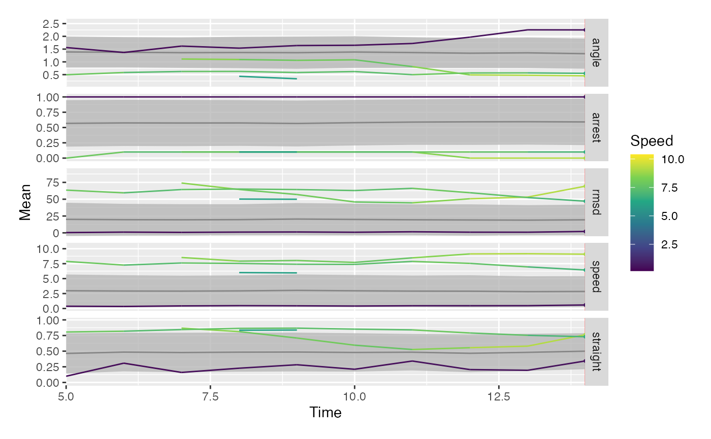

visustat_summary.RdWith visustat_summary, time-resolved summary statistics are calculated. In correspondence to visustat_frame continuous and discrete parameters can be mapped individually on color and shape.
In addition, the population mean and either standard deviations, confidence intervals or standard errors for respective statistics can be displayed as facetted ribbon plots.
visustat_summary(df, ...)| df | dataframe of the form: |
|---|---|
| frame |
|
| time.unit |
|
| tracks |
|
| par.map |
|
| par.shape |
|
| ribbon |
|
| ribbon.stat |
|
| line.size |
|
| line.alpha |
|
| line.length |
|
| points.size |
|
| points.alpha |
|
| points.shape |
|
| unit |
|
data(hiv_motility)
visustat_summary(hiv_motility %>% na.omit(), par.map="speed", tracks=c(48, 66, 102, 108))
#> frame not specified, defaulting to latest frame in dataset: 10
#> Warning: pars.numeric not specified, assuming the parameters to be: speed, angle, arrest, rmsd, straight
#> Warning: `rename_()` was deprecated in dplyr 0.7.0.
#> Please use `rename()` instead.
#> This warning is displayed once every 8 hours.
#> Call `lifecycle::last_warnings()` to see where this warning was generated.
#> Warning: `mutate_()` was deprecated in dplyr 0.7.0.
#> Please use `mutate()` instead.
#> See vignette('programming') for more help
#> This warning is displayed once every 8 hours.
#> Call `lifecycle::last_warnings()` to see where this warning was generated.
